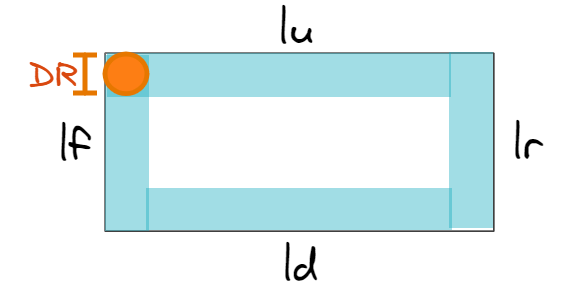
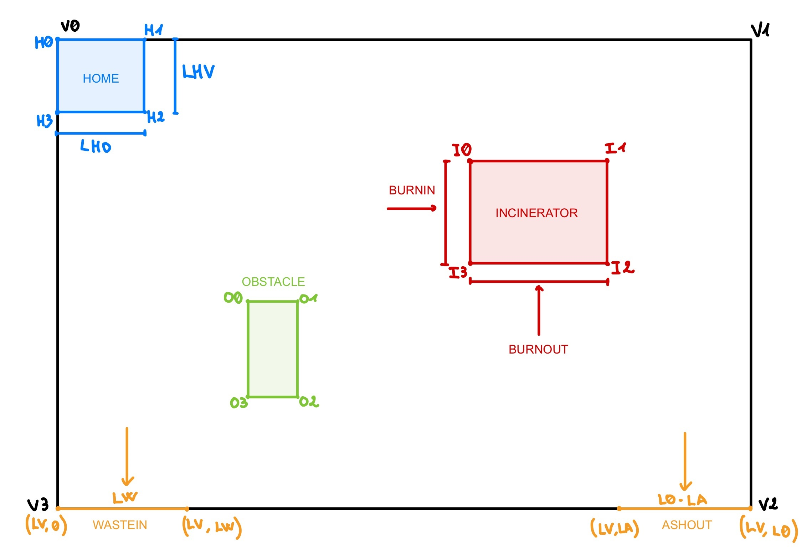

Introduction
Il progetto prevede lo sviluppo di un sistema di gestione per un servizio di incenerimento rifiuti (Waste Incinerator Service - WIS),
che coordina il movimento dei rifiuti e delle ceneri tramite un robot operatore (OpRobot).
Il sistema sarà organizzato in una Service Area con una serie di elementi chiave per la gestione del processo.
Requirements
Per vedere i requisiti visitare la pagina relativa alla richiesta del committente presso TemaFinale24
Requirement Analysis
Per modellare il servizio, è necessario introdurre il concetto di attore, un componente software autonomo in grado di gestire, inviare e ricevere messaggi all'interno di un ambiente
distribuito.
Per approfondire le funzionalità e le possibili interazioni di un attore, si rimanda a QakActors24.
Service Area
- La Service Area è un rettangolo situato in un piano euclideo.
- All'interno della Service Area sono presenti ostacoli.
- Il bordo perimetrale ha una lunghezza totale data da lf + ld + lr + lu, come mostrato in figura.

- Poiché la stanza ha una forma rettangolare, si ha lf = lr e ld = lu. Per comodità, i lati orizzontali verranno indicati con LO e quelli verticali con LV.
- Il DDRRobot fornito dal committente ha un ingombro tale da poter essere racchiuso in un cerchio di raggio R, quindi il suo diametro risulta DR = 2R.

- La service area può essere rappresentata come un sistema cartesiano di coordinate (X, Y) i cui vertici partendo da in alto a sinistra andando in senso orario sono:
- V0(0, 0)
- V1(0, LO)
- V2(LV, LO)
- V3(LV, 0)
Nella Service Area, sono presenti diverse aree funzionali in cui vengono svolte attività specifiche. Ogni area ha un ruolo definito nel processo di gestione e incenerimento dei rifiuti.
Di seguito sono descritti i dettagli relativi a ciascuna area:
HOME
area di partenza del robot, definita nel piano come uno spazio delimitato dai seguenti quattro punti:
- H0(0, 0)
- H1(LHO, 0)
- H2(LHO, LHV)
- H3(0, LHV)
In questa area, il robot è inizialmente in standby, pronto per l'attività.
WASTEIN
segmento situato lungo il lato ld, definito dai vertici:
Dove LW rappresenta la lunghezza del WasteIn Port, l'ingresso dei rifiuti nella Service Area.
ASHOUT
area situata lungo il lato ld, delimitata dai vertici:
Questo è il punto di accesso per lo scarico delle ceneri, e la lunghezza della porta di uscita è definita dalla distanza LO - LA.
INCINERATOR
area dove avviene l'incenerimento dei rifiuti. È rappresentata come un rettangolo all'interno della Service Area, definito dai seguenti vertici:
- I0(x1, y1)
- I1(x2, y1)
- I2(x2, y2)
- I3(x1, y2)
L'inceneritore ha due ingressi: il BurnIn Port, definito dai vertici I0=(x1, y1) e I3=(x2, y1), e il BurnOut Port, definito dai vertici I1=(x2, y2) e I2=(x1, y2), attraverso i quali i rifiuti vengono trasferiti e le ceneri vengono rilasciate.
OBSTACLE
Un ostacolo nel piano, delimitato dai seguenti 4 vertici:
- O0(xo1, yo1)
- O1(xo2, yo1)
- O2(xo2, yo2)
- O3(xo1, yo2)
Sebbene non esplicitamente menzionato dal committente, questo ostacolo è visibile nella figura e si trova nelle aree indicate.
WasteStorage e AshStorage
WasteStorage e AshStorage sono entità non facenti parte del sistema che però vi comunicano attraverso il deposito di spazzatura ed il raccoglimento di ceneri,
attraverso la loro misurazione da parte di sensori presenti all'interno di ogni area (scale in WasteStorage, sonar in AshStorage), in cui il WIS terrà traccia dello stato.
Incinerator
L'Incinerator è l'entità che si occupa di bruciare i rifiuti che vengono portati nella WasteIn port.
Analizzando la richiesta del committente, è obbligo considerare l'Incinerator come entità attiva,
in quanto ha necessità di dover emettere un segnale (acustico o di altro tipo) che può essere percepito dall'OpRobot e dal WIS.
Inoltre, l'Incinerator deve essere anche in grado di ricevere un segnale di attivazione,
il quale non è stato correttamente definito dal committente, quindi non è possibile un analisi più approfondita.
Si evince però che:
- Lo stato dell'Incinerator può essere On, Off e Idle.
- L'inceneritore può trattare un RP alla volta.
- Il processo di combustione richiede BTIME secondi.
MonitoringDevice
- Il Sonar misura il livello delle ceneri nell'AshStorage container.
- La soglia DLIMIT definisce il livello minimo sotto il quale il contenitore è considerato pieno.
- Il Led funge da dispositivo di allerta, segnalando lo stato dell'Inceneritore e dell'AshStorage.
DDRRobot
OPRobot
L'OpRobot si occupa di spostarsi tra le varie aree operative del sistema, raggiungendo le posizioni
WASTEIN, BURNIN, BURNOUT, ASHOUT e HOME.
Le sue funzioni principali includono:
- Il prelievo dei rifiuti da WASTEIN per il trasferimento in BURNIN.
- Il ritorno a HOME durante la fase di bruciatura dell'inceneritore o in assenza di attività.
- La raccolta delle ceneri da BURNOUT per il loro scarico in ASHOUT.
È controllato dal WIS, che invia istruzioni al BasicRobot24 per gestirne il movimento e le operazioni.
WIS
L'attore WIS è incaricato di gestire lo stato dell'inceneritore, mantenendo traccia del suo stato (On/Off/Idle) e del livello di cenere accumulata. Per svolgere queste operazioni, interagisce direttamente con gli attori Incinerator e MonitoringDevice.
Il WIS ha il ruolo di coordinare le operazioni fondamentali del sistema e di comunicare con gli altri attori. Le sue principali responsabilità includono:
- Inviare un segnale di attivazione all'Incinerator
- Avviare il processo di incenerimento inviando il messaggio startBurning, il quale determina la combustione di un RP per una durata predefinita (BTIME secondi).
- Aggiornare il proprio stato interno in base ai messaggi ricevuti come la notifica l'inizio del processo di incenerimento, il completamento della combustione,inviato dal MonitoringDevice, riporta il livello attuale delle ceneri.
- Accettazione di un RP attraverso la porta BURNIN.
- Bruciatura del RP in BTIME secondi.
- Emissione di un segnale alla fine del processo per avvisare il sistema.
- Espulsione delle ceneri tramite la porta BURNOUT.
mancano bilancia e sonar
Supporto Software
Il Sonar e il Led sono dispositivi fisici per cui il committente fornisce software di supporto per il loro utilizzo:
- RaspBasicCode
- RaspApplCode24
Modellazione come Attore
Analogamente all'OpRobot con il DDR robot, è possibile modellare il MonitoringDevice come un attore esterno al sistema, che interagisce con i dispositivi fisici associati.
La distanza DLIMIT sarà definita come una variabile intera e positiva dell'attore.
Test Plan
WIS
Per verificare il corretto funzionamento del sistema, sono previsti test sui seguenti aspetti, considerando il movimento come quello di un robot:
- Verifica del corretto spostamento dell’OpRobot tra i vari punti della Service Area.
- Controllo della gestione delle ceneri e del livello misurato dal Sonar.
- Validazione dei segnali del LED e della loro coerenza con lo stato del sistema.
- Test di integrazione tra tutti i componenti per garantire il corretto ciclo operativo.
Deployment
Questa sezione sarà completata nelle fasi successive del progetto.
Maintenance
Piani di manutenzione e miglioramenti futuri saranno implementati dopo la fase di testing.
 GIT repo: https://github.com/Bostre17/iss24Temafinale
GIT repo: https://github.com/Bostre17/iss24Temafinale